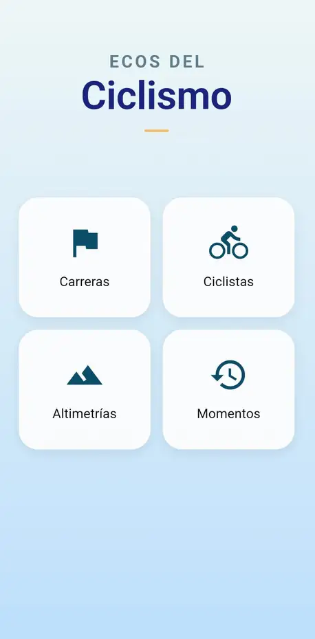
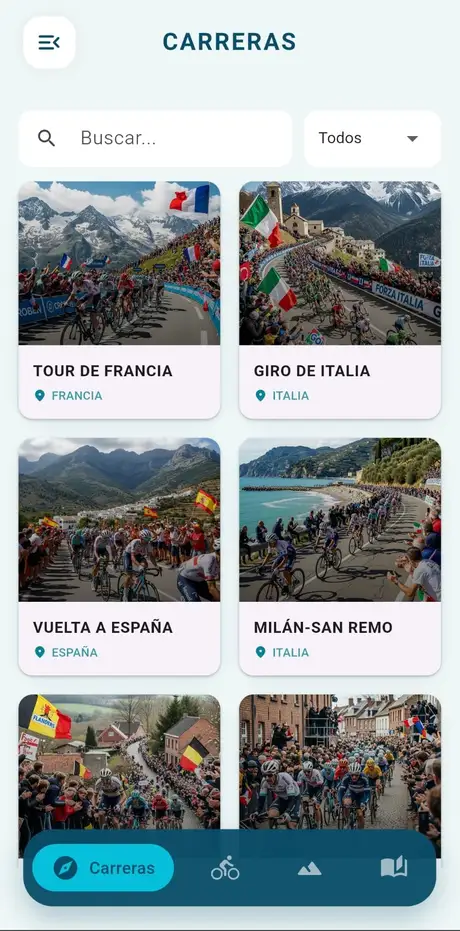
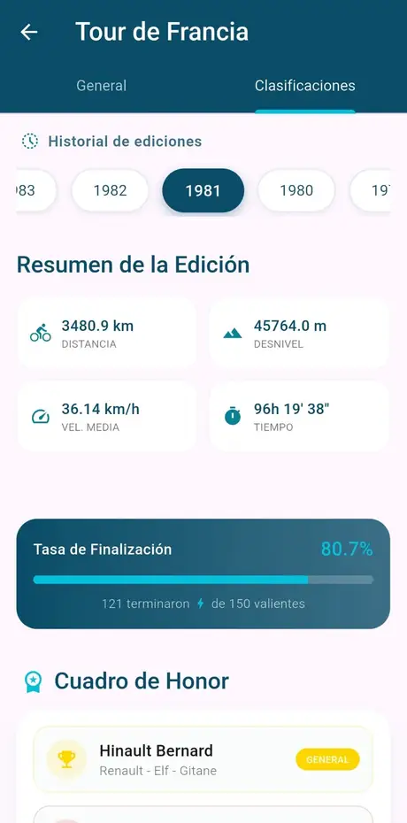
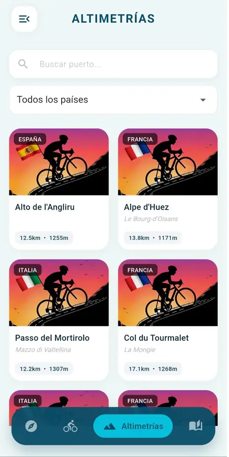
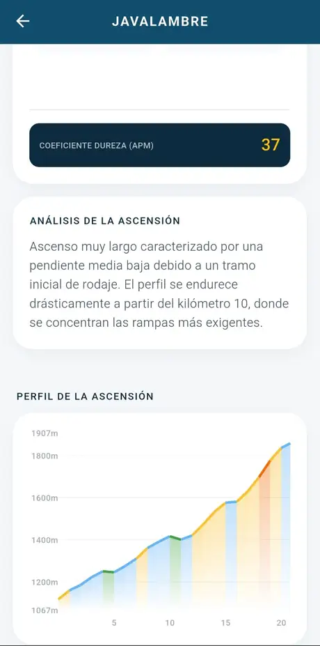
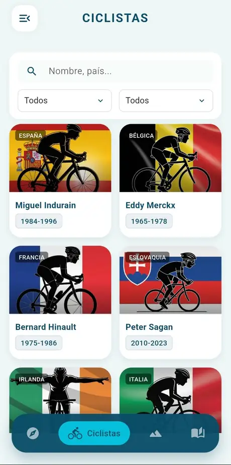
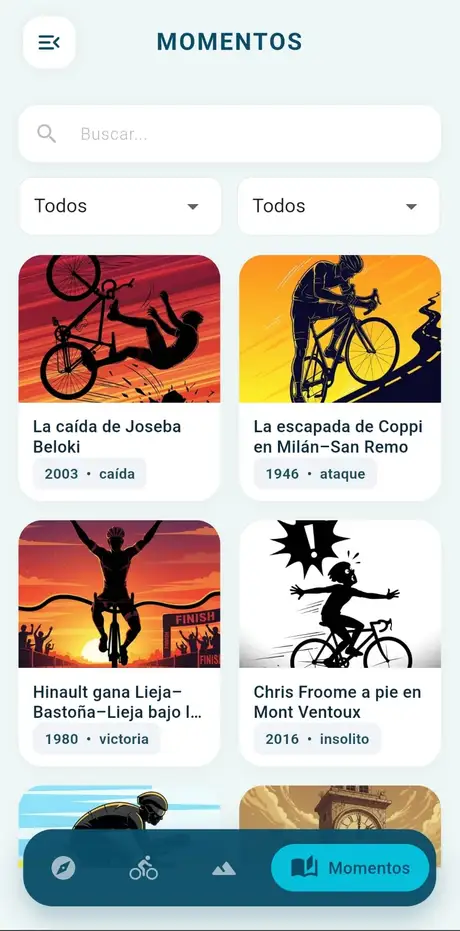

🚴
Ecos del Ciclismo
La historia y la épica del ciclismo en tu bolsillo.
Ecos del Ciclismo es una aplicación pensada para los amantes del ciclismo clásico y moderno. Incluye clasificaciones históricas, perfiles de grandes ciclistas, altimetrías de puertos míticos y relatos de algunas de las gestas más legendarias del pelotón.
¿Qué ofrece la App?
🏆
Clasificaciones
Grandes vueltas y clásicas.
🚵
Altimetrías
Puertos legendarios.
👤
Ciclistas
Perfiles históricos.
✨
Momentos
Relatos épicos.







Instalar aplicación
📥 Descargar APK
✅ Sin publicidad ni rastreadores
🚴 Archivo seguro y ligero